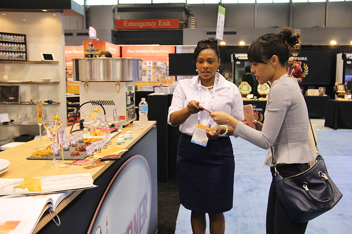
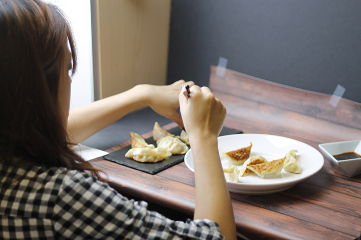
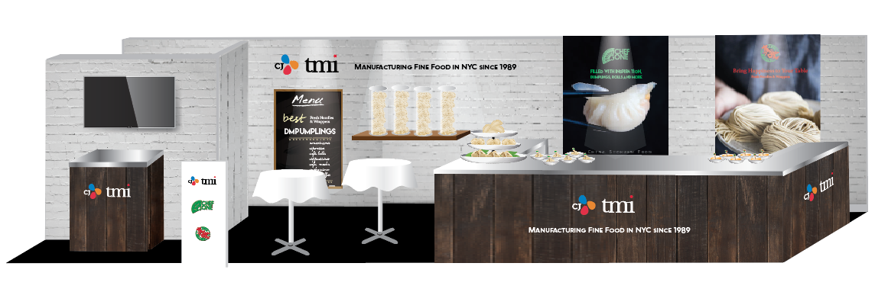

Hellen Bio
Yen Hui Ho, Hellen, is a graphic deigner, and a par-time student. She works in a food companyy in Williamsburg, the company manufactures mainly Asian appetizers and recently aquired by a Korean Food Coompany called CJ Foods. She works under marketing and branding manager to help creating marketing materials like posters, catalogues, advertisment etc. to promote the brands.
Hellen has always enjoyed design, art and food. In fact she started her deisgn career just less than 2 years ago. She studyed advertisment in college in Taiwan and began as a marketing coordinator. After she came to United States andn work for TMI Trading ( now is CJ TMI ) the company provided her trianing and a chance to become a designer.
She took classes in FIT since 2014, the courses FIT offeres could help her to improve her skill as a designer.


